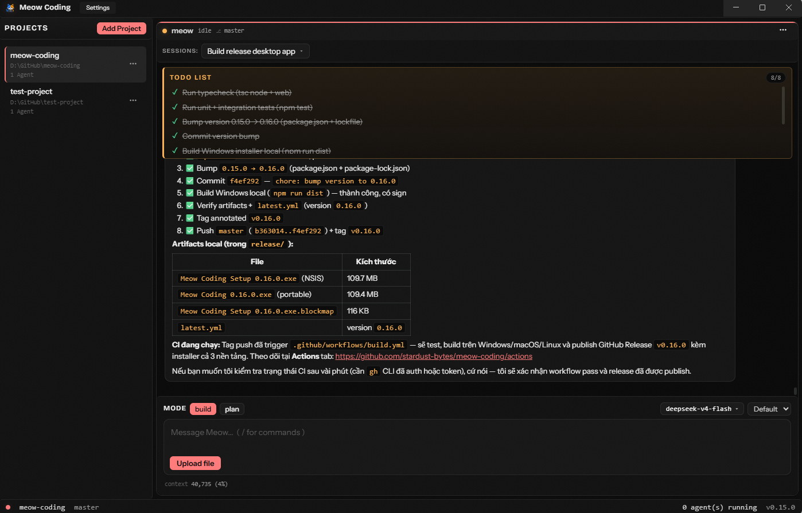

BS Coding is a desktop app for running opencode, Claude Code, aider — or any CLI agent on your PATH — in parallel terminal panes inside a single window. It also ships a built-in native BS agent with chat UI, tools, sessions, and skills.

Multi-agent panes · native BS chat · skills · cost tracking — all in one window.
// features
Spawn several CLI agents in one window, each in its own terminal pane. Stop, restart, inject, and zoom per pane — process trees are killed on exit, no orphans.
A first-party agent with chat UI, streaming output, markdown rendering, tool-call cards, image attachments, and undo/redo.
/init, /review, /new, and Superpowers workflows — plus custom commands with $1..$N, @path, and !cmd interpolation. 19 skills bundled.
Create, switch, rename, and delete conversations per agent, with auto-title and per-session undo/redo through file snapshots.
stdio and HTTP MCP servers, plus language-server diagnostics surfaced directly in the agent's edit tools.
Token and dollar usage per session and per model, via the models.dev catalog — know what every run costs.
// credits